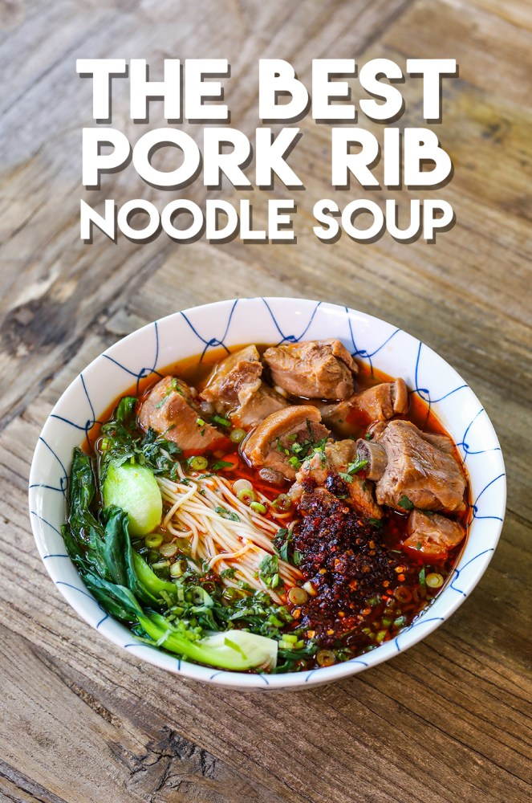

Ingredients
For the Soup
- 4 lb pork riblets, baby back ribs or country style pork ribs
- 10 cloves garlic, crushed
- 4 slices ginger
- 1 tbsp black pepper corn
- 3 to 4 bay leaves
- 3 slices licorice
- 2 to 3 tsp rock sugar
- 1 large leek, cleaned
- 4 dried shiitake mushrooms
- 10 cups water
- 5 cups chicken broth
- 1 cup shaoxing wine
- 1/2 cup soy sauce
For the Noodle Bowl
- handful of baby bok choy, yu choy, napa cabbage, green cabbage or any of your choice of leafy greens
- fresh, frozen or dried wheat noodles (cook only the portion you are going to serve immediately)
- chopped green onions
- chopped cilantro
- chili oil with chili flakes
Preparation Time
1h 30min
Instructions
- Cut pork riblets into single pieces along with the bones. You can part boil the ribs if you prefer, which is just blench in boiling water for 2 minutes and rinse under cold water. This will make the soup more clean look and flavor, but not necessary for this recipe.
- Combine garlic, ginger, pepper corn, baby leaves and licorice in a large tea filter bag so we can remove easily after the soup is done.
- Place the pork riblets, the aroma bag, rock sugar, leek, shiitake mushrooms, water, chicken broth, shaoxing wine and soy sauce in a large pot (9-Qt / 8.5L pot). Cover, bring it to boil over high heat and skim the scums on the surface of the soup with a fine skimmer, about 5 to 10 minutes.
- When they soup is clean, cover the pot and reduce heat to medium low and simmer for 1 1/2 hours.
- When soup is done boiling, go ahead and remove all the solid ingredients except ribs. Make sure to squeeze the soup as much as possible from the veggies & the bag.
- Bring another pot of water to boil, add some salt. Cut baby bok choy into quarter. Blanch the bok choy for 1 minute or until your preference tenderness and remove from the boiling water. In the same pot (skim if needed), cook your choice of noodles by following the package of the noodles you are using.
- Drain the noodles and place in a large serving bowl. Arrange streamed bok choy around the noodles then pour the soup and riblets on top of the noodles until the noodles are covered by the soup. Sprinkle some chopped green onions and cilantro and add 1 to 3 tsp of chili oil with chili flakes right on top to your taste. Serve immediately. Enjoy!
